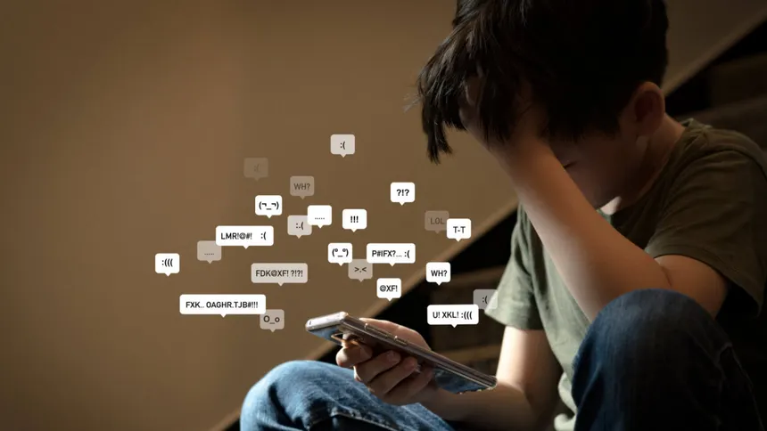
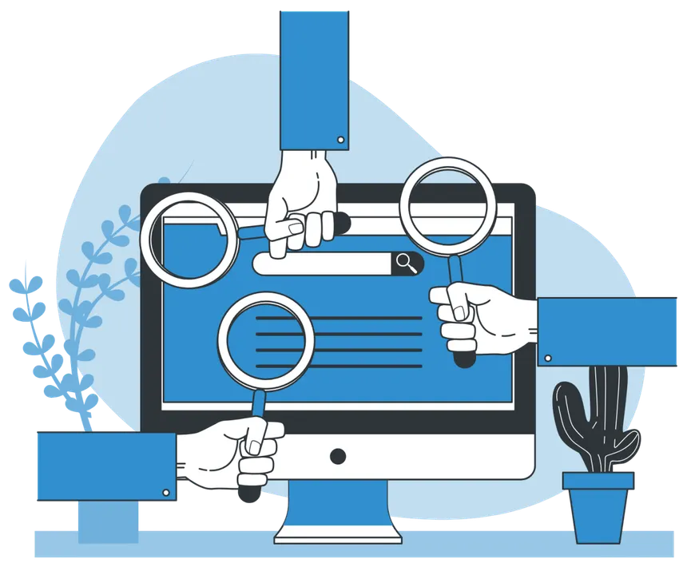

¿Que programas ofrecemos?
Navegá Seguro
- Aprendé a proteger tu información personal en internet
- Uso seguro de contraseñas y autenticación
- Prevención de estafas digitales y phishing
- Uso responsable de redes sociales
- Dirigido a estudiantes de nivel secundario
- Incluye talleres prácticos y actividades interactivas
- Duración: 1 mes
- Participación: a través de escuelas o inscripción online

Stop Ciberbullying
- Concientización sobre el acoso digital
- Cómo identificar situaciones de ciberbullying
- Estrategias para actuar y pedir ayuda
- Fomento del respeto y la convivencia online
- Dirigido a jóvenes y docentes
- Incluye charlas, dinámicas grupales y casos reales
- Duración: 3 semanas
- Participación: talleres en instituciones educativas

Detectives Digitales
- Aprendé a identificar noticias falsas (fake news)
- Análisis crítico de la información en internet
- Cómo detectar estafas y engaños online
- Uso de herramientas de verificación de información
- Dirigido a público general
- Incluye actividades prácticas con ejemplos reales
- Duración: talleres cortos
- Participación: abierta mediante inscripción web
